Pindahkan email, Drive, dan foto dari akun kampus ke Gmail pribadi.
Akun kampus biasanya dinonaktifkan setelah lulus. Dengan fitur resmi Google Transfer your content, Anda bisa menyalin semuanya ke Gmail pribadi dalam beberapa menit.
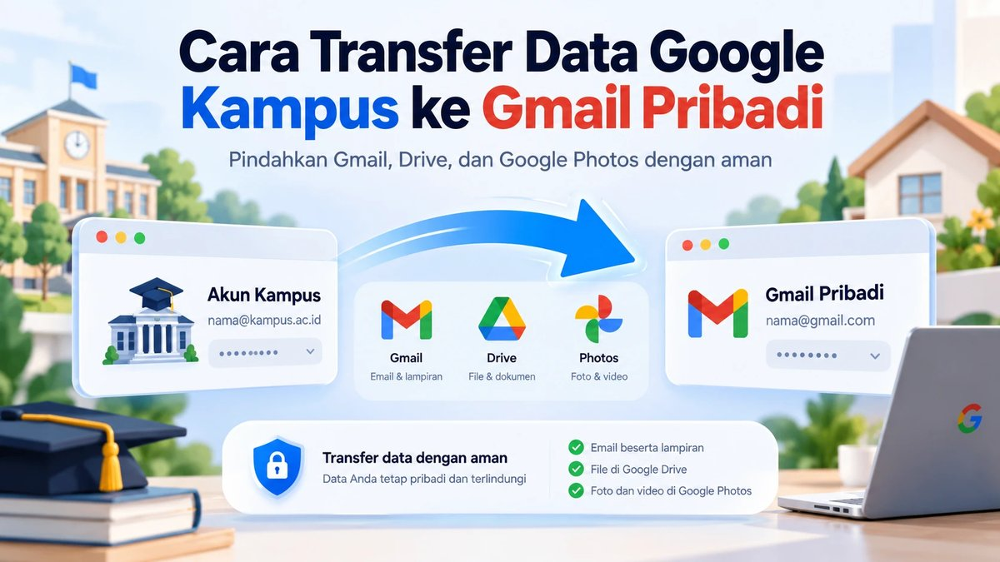
Sebelum mulai
Siapkan tiga hal ini agar prosesnya lancar.
-
Akses akun kampus
Anda harus bisa login ke akun asal, misalnya alamat berakhiran
.ac.id. -
Akses Gmail pribadi
Kode verifikasi dikirim ke akun tujuan, jadi buka kotak masuknya di tab lain.
-
Ruang penyimpanan
Akun gratis mendapat 15 GB yang dibagi untuk Drive, Gmail, dan Google Foto.
Langkah demi langkah
Semua alamat email, kode, kata sandi, foto profil, dan token di tangkapan layar sudah kami buramkan.
-
Buka halaman transfer
Login dengan akun kampus, lalu buka
takeout.google.com/transfer. Halaman Transfer your content akan tampil dengan tiga tahap.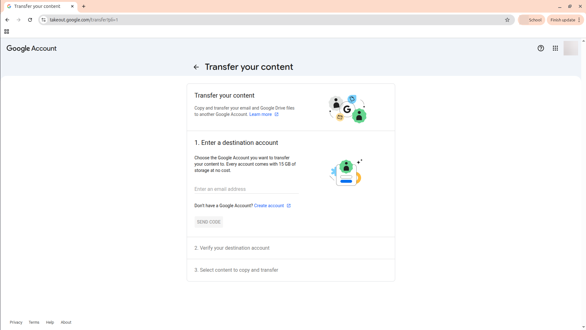
Halaman awal dengan tiga tahap transfer. -
Masukkan akun tujuan
Pada bagian Enter a destination account, ketik alamat Gmail pribadi Anda. Klik SEND CODE.
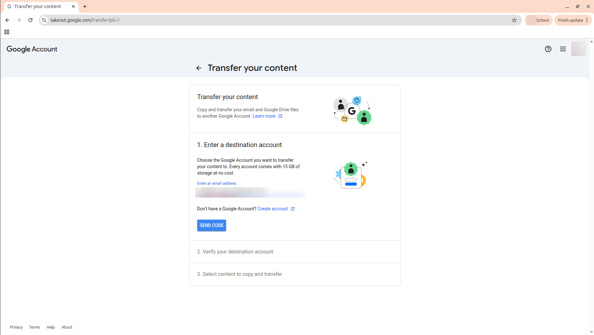
Alamat Gmail tujuan diburamkan. -
Buka email verifikasi
Di Gmail pribadi, cari email Verify your account dari Google. Klik Get confirmation code.
Tidak merasa meminta transfer? Abaikan email itu. Tanpa kode, tidak ada data yang dipindahkan.
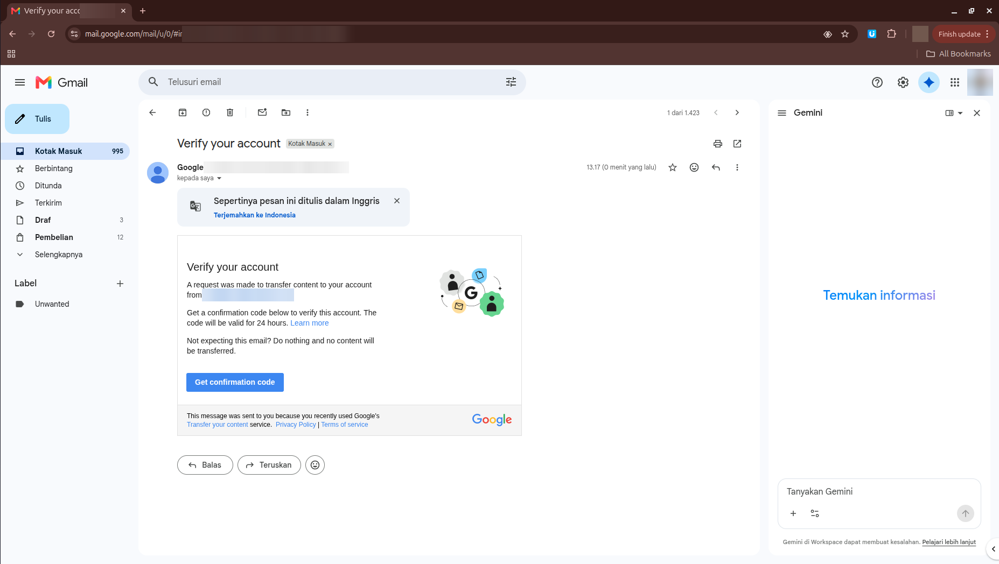
Email verifikasi dari Google di kotak masuk akun tujuan. -
Salin kode konfirmasi
Halaman Konfirmasi transfer menampilkan kode delapan karakter. Kode berlaku selama 24 jam.
Jangan bagikan kode ini kepada siapa pun.
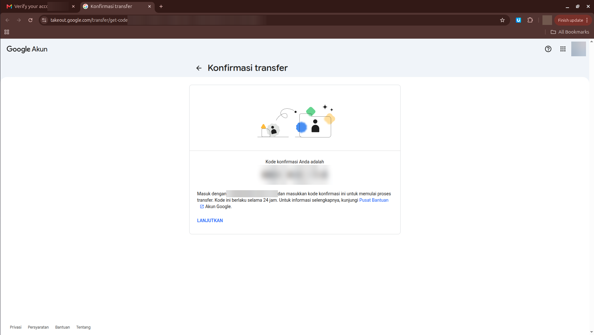
Kode konfirmasi dan token di bilah alamat diburamkan. -
Verifikasi akun tujuan
Kembali ke tab akun kampus. Tempel kode di kolom Enter code, lalu klik VERIFY.
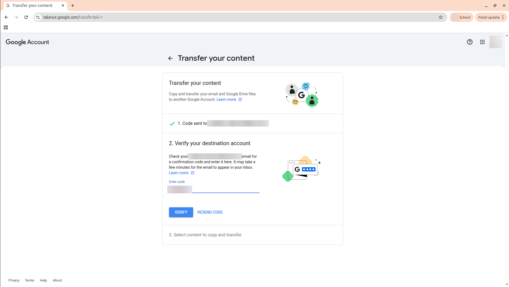
Kode dimasukkan di tab akun kampus. -
Pilih konten, lalu mulai
Aktifkan produk yang ingin disalin, lalu klik START TRANSFER.
Produk yang dapat disalin Produk Yang disalin Drive File yang Anda miliki Gmail Semua email Foto Foto, video, dan album milik Anda File milik orang lain yang dibagikan kepada Anda tidak ikut tersalin.
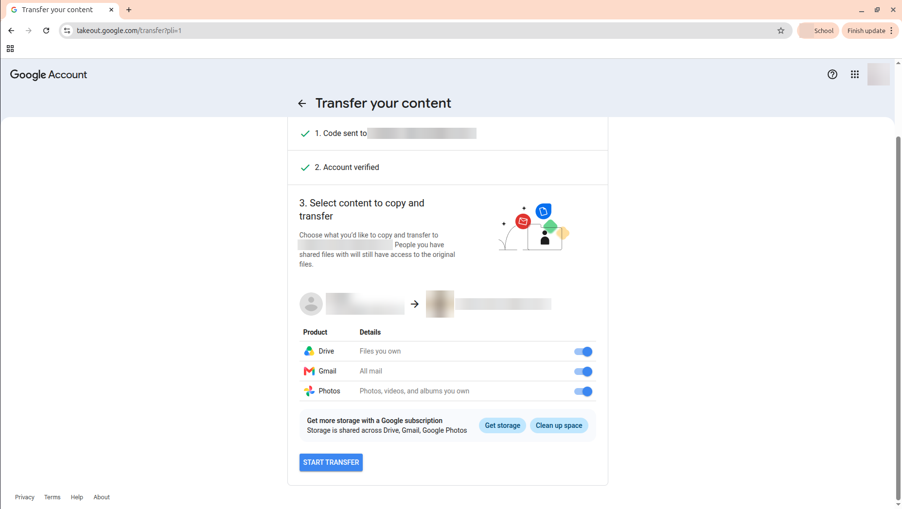
Nama, email, dan foto profil kedua akun diburamkan. -
Konfirmasi kata sandi
Google meminta kata sandi akun kampus sekali lagi untuk memastikan ini benar Anda.
Sebelum mengetik, pastikan alamat di bilah browser diawali
accounts.google.com.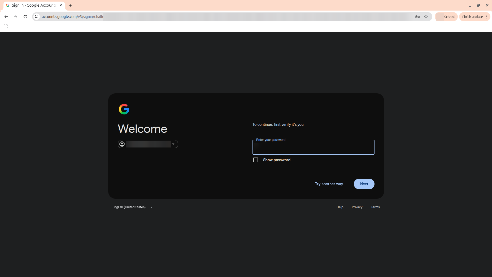
Alamat akun, isi kolom kata sandi, dan token sesi diburamkan. -
Transfer berjalan
Muncul pesan You're all set. Proses bisa memakan waktu hingga satu minggu. Google mengirim email ke akun tujuan saat transfer selesai.
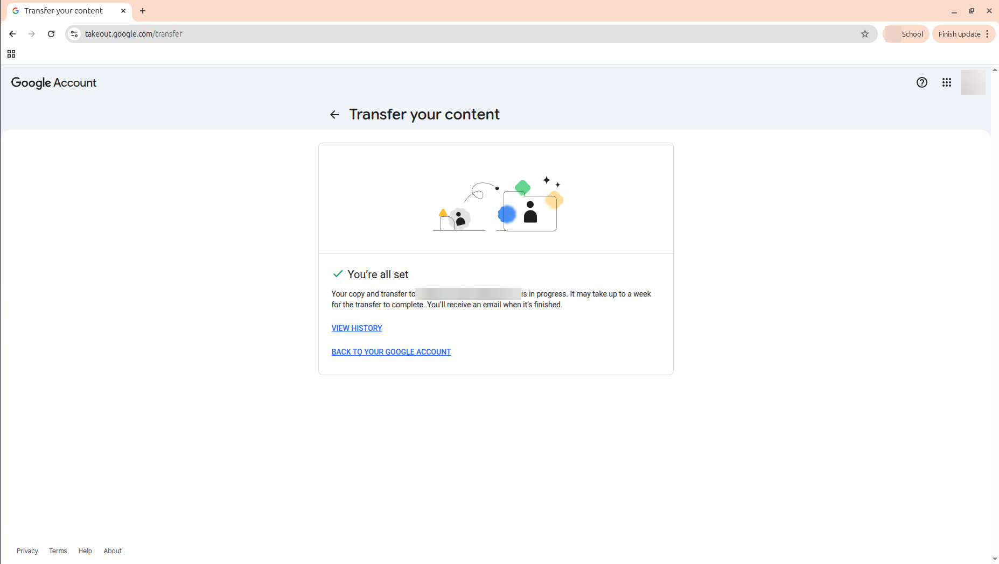
Konfirmasi bahwa transfer sudah dimulai. -
Cek email dari Google
Beberapa saat kemudian, Google mengirim email Your content is on its way ke kedua akun. Email ini menandakan transfer sudah diterima dan sedang diproses.
Gmail akun tujuan juga membuat label baru berisi email hasil pindahan, jadi email lama mudah ditemukan.
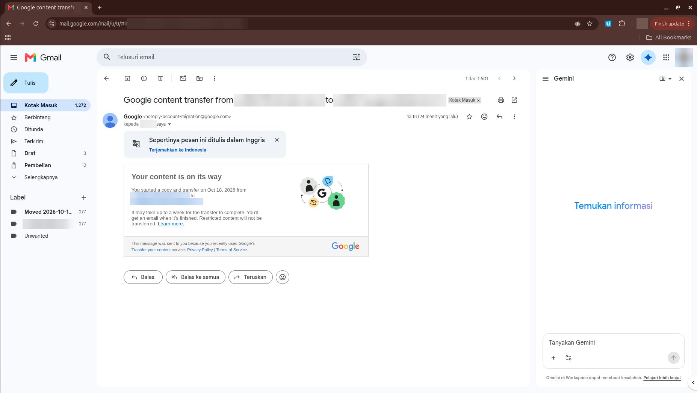
Email pemberitahuan transfer. Alamat kedua akun dan nama penerima diburamkan. -
Pantau riwayat transfer
Klik VIEW HISTORY atau buka
takeout.google.com/transfer/history. Status tertulis In progress sampai transfer selesai.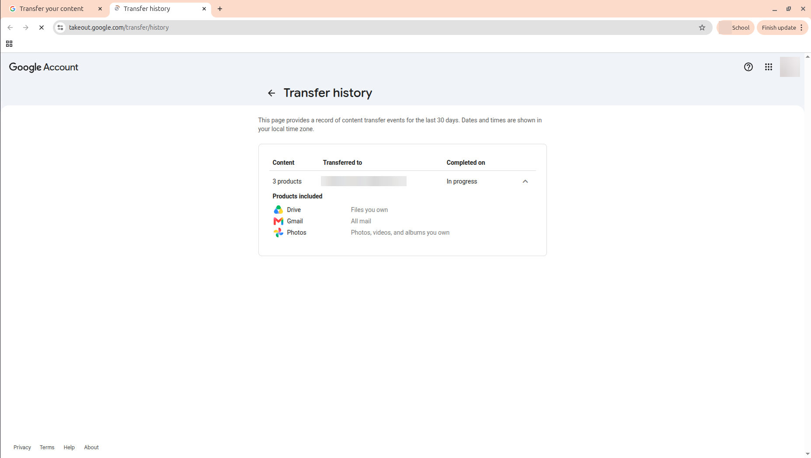
Riwayat transfer 30 hari terakhir.


Tips keamanan
Kode konfirmasi dan kata sandi adalah kunci akun Anda.
-
Hanya di situs resmi
Lakukan transfer hanya di
takeout.google.comdan login hanya diaccounts.google.com. -
Jangan bagikan kode
Tidak ada petugas kampus atau Google yang perlu meminta kode konfirmasi atau kata sandi Anda.
-
Buramkan sebelum berbagi
Jika membuat tangkapan layar, buramkan email, kode, dan alamat panjang di bilah browser.
Tanya jawab
Menu transfer tidak muncul. Kenapa?
Admin kampus mungkin belum mengaktifkan fitur ini. Hubungi bagian IT kampus Anda.
Apakah data di akun kampus akan hilang?
Tidak. Fitur ini menyalin data. Akun kampus tetap utuh sampai dinonaktifkan oleh kampus.
Kodenya sudah lewat 24 jam.
Klik RESEND CODE di tahap verifikasi untuk meminta kode baru.
Kapan sebaiknya saya melakukan ini?
Sebelum akun kampus dinonaktifkan, misalnya beberapa minggu sebelum wisuda.